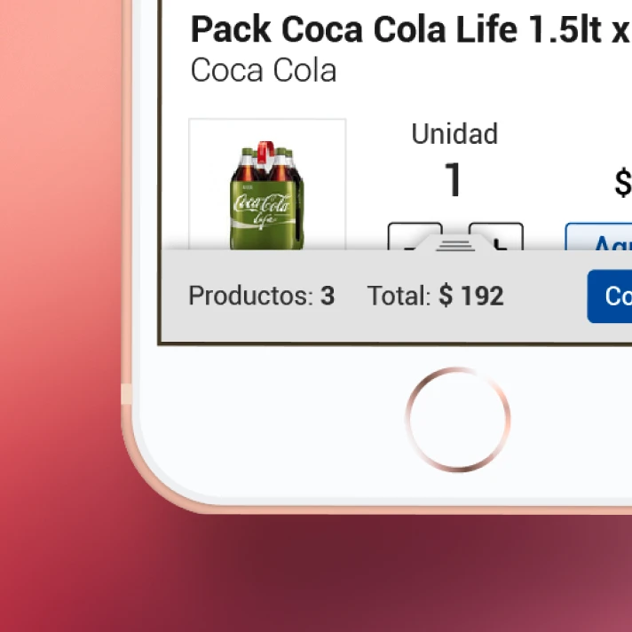

Devoto E-commerce
A new shopping experience
Client
Devoto, one of the largest supermarket chains in Uruguay, was looking for a redesign of his e-commerce site.
Challenge
The focus was on the shopping experience on mobile devices, so the site had to be 100% responsive and designed following the concepts of Mobile First.
Proposal

Roles
In this project I had several roles: I was the front-end developer of the site, participated in the design of various interface components, and specially designed the home page for the desktop.
The finding
The finding that stands out the most among the interface components is the design of the shopping cart for the mobile version. The design solution allows the cart to be present and easily accessible throughout the purchase process but without being a hassle.
Desktop home
In addition to the focus on the mobile experience, due to the client demand, I redesigned the desktop home page to have a greater visual impact. I grouped the product categories into large blocks, each with an illustrative image and a big color title, allowing the menu / navigation to be brought into a more attractive format.
In turn, this solution used in the home solved other of the client's requirements: to transmit the great variety of products that the supermarket has.
I'm in the middle of a portfolio redesign, that's why this case study lacks detail. More to come soon.